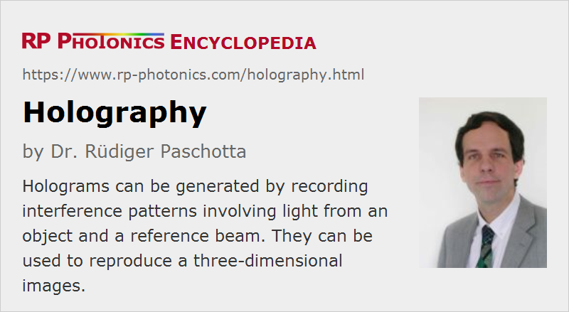

Holography
Definition: methods for recording and reconstructing three-dimensional images
German: Holographie
Categories: general optics, vision, displays and imaging, methods
How to cite the article; suggest additional literature
Author: Dr. Rüdiger Paschotta
Holography is a class of methods for recording and reconstructing three-dimensional images, which are based on interference phenomena. Holographic images are called holograms. Unlike normal photographic images, they do not use a mapping of individual objects points to individual points in the hologram; in that sense, they are not images. Instead, light from each image point affects the whole hologram, and each point of a holographic recording affects each reconstructed image detail. The reconstruction of visible images is possible only under certain circumstances, e.g. illumination with laser light coming from a certain direction.
There are also holograms which are generated not by recording light fields from real objects, but with computer-based methods – just as photograph-type images may be artificially made, e.g. via computer graphics.
The Nobel Prize 1971 in Physics was awarded to Dennis Gabor for his invention and development of holographic methods; his first demonstration was done in 1947.
Basic Principles of Holography
The basic operation principles of holography are explained in the following.
We first consider a situation where two mutually coherent collimated monochromatic laser beams coming from different directions are superimposed in some transparent medium. Let us assume that a first beam comes from the left side and a second one from the top right of the following diagram:
The second beam will typically be generated from the other beam, using a beam splitter and two mirrors, for example.
Where the beams are superimposed, an interference pattern arises. The orientation of that pattern depends on the direction of the two beams. The oscillating intensity pattern can be described with a vector which is obtained as the difference between the wave vectors of the two beams. Its magnitude determines how rapid the oscillation is, and its direction is perpendicular to the points of constant intensity.
Now imagine that the interference pattern is somehow burned into the medium, so that a holographic grating is formed. There are different physical mechanisms which can lead to such effects. For example, the medium may contain light-sensitive particles as in a photographic film, so that the illuminated parts become light-absorbing after some development process. Other physical mechanisms (e.g. in photorefractive media) can lead to changes of the refractive index, thus to phase gratings in the medium. In the simple considered situation, we obtain a volume Bragg grating.
Once the medium has such a holographic grating inside, it becomes reflective for laser beams with the correct angular orientation and wavelength. For example, if we now only take the first laser beam (coming from the left side), part of its optical power will be reflected (more precisely, diffracted) in the lower left direction – without the other laser beam coming from the top right. So for an observer near the bottom the situation looks similar as before, where he could see only the beam coming from the top.
Of course, the same mechanism will work for other directions of the second beam. The orientation of the recorded holographic grating will change accordingly, so that the reflected beam obtained with the single incoming beam only will always have the appropriate outgoing direction.
We can do that also with two different beams coming from the top simultaneously with different directions:
The interference pattern now becomes more complicated. Assuming that the local changes of absorption or refractive index are proportional to the optical intensity during the recording, the resulting grating will reflect light in two different directions when only the first beam is applied.
Similarly, the operation principle would work for divergent or convergent beams.
Finally, we can replace one of the mirrors for the second beam with some object (e.g. a human face). Instead of simply a reflected beam, we will then obtain a far more complicated spatial distribution of scattered light, propagating in a wide range of different directions. Some of that light (the object beam – actually not a collimated beam any more) will get into the medium where it can be superimposed with the first beam (called the reference beam), and it will again interfere with it: its spatial coherence is generally lost, but not its temporal coherence, assuming that the object is not moving.
Note that the scattered light can be regarded as a superposition of many plane waves, each one contributing to the hologram. Mathematically, we can decompose the scattered light field into plane waves with a Fourier transform. The reconstruction will work for each plane wave component, and together those plane waves will form an image of the object.
The holographic image has a three-dimensional appearance, because it gives the observer certain depth perception cues. This is because the whole light field, which was initially scattered by the object, is reconstructed. For example, the observer may move around in order to see the object from different perspectives, perhaps even looking behind an object located in the front. In contrast, an ordinary two-dimensional photograph can only present the view for one given perspective chosen in the recording. Obviously, a hologram can contain far more information on an object or scene than a 2D image.
The principle has been explained with volume holograms. It is also possible, however, to work with a thin hologram, having a sufficiently strong index or absorption modulation within a thin layer.
Conditions for Recording Holograms
The recording of a hologram as explained above can work only under appropriate circumstances. A crucial condition is that a stable interference pattern is generated and can be recorded with sufficient accuracy. This has the following consequences:
- The used laser source needs to have a sufficiently long coherence length – well above the maximum occurring path length differences in the recording apparatus. This is related to a sufficiently small bandwidth (or linewidth) of the laser. Typically, one uses narrow-linewidth lasers in the form of single-frequency lasers – for example, certain laser diodes (possibly together with semiconductor optical amplifiers) or frequency-doubled YAG lasers.
- All optical elements and also the recorded object need to stand still during the recording – with an accuracy which is a small fraction of an optical wavelength. Otherwise, the interference pattern would be washed out. For objects like living beings, which cannot be accurately fixed with that precision, one may have to use a very short recording duration, e.g. the duration of a single nanosecond laser pulse. Of course, the involved path length differences should be well below the pulse duration.
- The recording medium must have a sufficiently high spatial resolution to accurately record the interference pattern. This condition would not be fulfilled by an ordinary photographic film or a CCD detector, for example.
Variants of Holographic Techniques
The volume hologram recorded as explained above requires a narrow-linewidth laser for reconstruction. It will of course appear only in the color of that laser, not as a full-color image.
There are transmission and reflection holograms for observation either via transmitted or reflected light. As mentioned above, some are volume holograms, while some applications require thin holograms. As also mentioned, holograms can be recorded as amplitude or phase gratings.
Different holographic recording media have been developed, including photographic emulsions (optimized for much higher resolution than ordinary photographic films), photorefractive materials, photo-sensitive polymers and photoresists.
There are various methods for generating holograms not as original recordings, but as copies of one recording or as computer-generated images. For example, thin phase holograms can be fabricated by forming precisely controlled surface relief patterns on thermoplastic substrates, using precision embossing techniques.
There are rainbow holograms which can be reconstructed with white light, which obviously can be an essential practical advantage. (For example, various kinds of security hologram applications would not be practical if a laser would be required for viewing.) However, the observed graded colors are then not those of the original object. After all, the recorded hologram does not contain such color information. Furthermore, vertical parallax must be sacrificed for that technique, i.e., a full 3D appearance is not possible.
It is possible even to create full-color holograms, which can be viewed with white light sources. Such techniques are usually based on rather involved operation principles, being substantially more difficult to understand than the basic principles as explained above. Also, they can usually not achieve a high image quality.
Another technical challenge is to produce moving 3D images (volumetric displays). Here, holography competes with other techniques, which appear to be more practical.
Applications of Holography
Although it would obviously be attractive to replace conventional two-dimensional photography and videos with holographic 3D imaging, the stringent requirements which are typical for holographic techniques are still strongly limiting the range of practical applications. Even after decades of development, we seem to be far from using holographic 3D color photographs in consumer applications or high-quality volumetric displays. Nevertheless, some applications have already been established; some examples:
- There are security holograms e.g. for passports, ID cards and credit cards, which are essentially used for making it substantially more difficult to produce convincing illegal copies, since the required replicating technology is hard to procure and expensive, and the details of the required hologram are difficult to measure.
- Despite the typical image imperfections, holograms can be attractive as pieces of art.
- For research purposes, holographic images of tiny objects can be made not only with light, but also with coherent X-rays, as can be generated with free electron lasers.
In the future, holography may serve for high density data storage. In contrast to currently used optical storage media, where only a thin two-dimensional layer is utilized, holographic memories could store data in a 3D fashion, potentially reaching enormous storage capacities within quite limited volumes. However, developing practical implementations remains a substantial challenge.
Suppliers
The RP Photonics Buyer's Guide contains 12 suppliers for holography devices. Among them:
Questions and Comments from Users
Here you can submit questions and comments. As far as they get accepted by the author, they will appear above this paragraph together with the author’s answer. The author will decide on acceptance based on certain criteria. Essentially, the issue must be of sufficiently broad interest.
Please do not enter personal data here; we would otherwise delete it soon. (See also our privacy declaration.) If you wish to receive personal feedback or consultancy from the author, please contact him e.g. via e-mail.
By submitting the information, you give your consent to the potential publication of your inputs on our website according to our rules. (If you later retract your consent, we will delete those inputs.) As your inputs are first reviewed by the author, they may be published with some delay.
See also: interference, coherence, narrow-linewidth lasers
and other articles in the categories general optics, vision, displays and imaging, methods
|  |
If you like this page, please share the link with your friends and colleagues, e.g. via social media:
These sharing buttons are implemented in a privacy-friendly way!